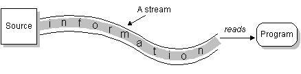

Feedback Form
|
|
Start of Tutorial > Start of Trail > Start of Lesson |
Search
Feedback Form |
To bring in information, a program opens a stream on an information source (a file, memory, a socket) and reads the information sequentially, as shown here: Similarly, a program can send information to an external destination by opening a stream to a destination and writing the information out sequentially, like this:No matter where the data is coming from or going to and no matter what its type, the algorithms for sequentially reading and writing data are basically the same: The
Reading Writing open a stream while more information read information close the streamopen a stream while more information write information close the streamjava.iopackage contains a collection of stream classes that support these algorithms for reading and writing. To use these classes, a program needs to import the
java.io
ReaderWriterjava.io.Readerprovides the API and partial implementation for readers--streams that read 16-bit characters--andWriterprovides the API and partial implementation for writers--streams that write 16-bit characters. Subclasses ofReaderandWriterimplement specialized streams and are divided into two categories: those that read from or write to data sinks (shown in gray in the following figures) and those that perform some sort of processing (shown in white). The figure shows the class hierarchies for theReaderandWriterclasses.Most programs should use readers and writers to read and write textual information. The reason is that they can handle any character in the Unicode character set, whereas the byte streams are limited to ISO-Latin-1 8-bit bytes.
To read and write 8-bit bytes, programs should use the byte streams, descendants ofInputStreamOutputStreamInputStreamandOutputStreamprovide the API and partial implementation for input streams (streams that read 8-bit bytes) and output streams (streams that write 8-bit bytes). These streams are typically used to read and write binary data such as images and sounds. Two of the byte stream classes,ObjectInputStreamandObjectOutputStream, are used for object serialization. These classes are covered in Object Serialization.As with
ReaderandWriter, subclasses ofInputStreamandOutputStreamprovide specialized I/O that falls into two categories, as shown in the following class hierarchy figure: data sink streams (shaded) and processing streams (unshaded).
ReaderandInputStreamdefine similar APIs but for different data types. For example,Readercontains these methods for reading characters and arrays of characters:int read() int read(char cbuf[]) int read(char cbuf[], int offset, int length)InputStreamdefines the same methods but for reading bytes and arrays of bytes:Also, bothint read() int read(byte cbuf[]) int read(byte cbuf[], int offset, int length)ReaderandInputStreamprovide methods for marking a location in the stream, skipping input, and resetting the current position.
WriterandOutputStreamare similarly parallel.Writerdefines these methods for writing characters and arrays of characters:Andint write(int c) int write(char cbuf[]) int write(char cbuf[], int offset, int length)OutputStreamdefines the same methods but for bytes:All of the streams--readers, writers, input streams, and output streams--are automatically opened when created. You can close any stream explicitly by calling itsint write(int c) int write(byte cbuf[]) int write(byte cbuf[], int offset, int length)closemethod. Or the garbage collector can implicitly close it, which occurs when the object is no longer referenced.
|
|
Start of Tutorial > Start of Trail > Start of Lesson |
Search
Feedback Form |
Copyright 1995-2004 Sun Microsystems, Inc. All rights reserved.